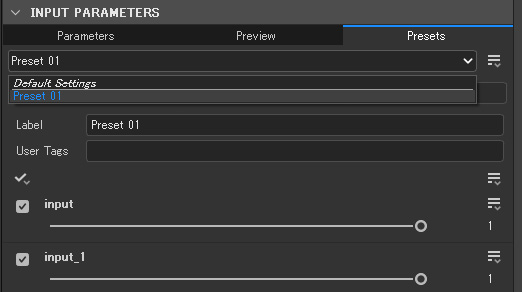

SubstanceDesigner
SubstanceDesigner PythonAPI大解読
SDSBSCompGraph：#1
2024/03/07
今回は、sdsbscompgraph モジュールを調べていこうと思います。
(物量的に、記事は複数回に分かれると思います。)
コンポジショングラフ（CompositionGraph） は、SubstanceDesignerの代表的なグラフで、テクスチャを生成するためのグラフです。
他にもmdl・ファンクショングラフなどのグラフもあるため、それらと差別化するためにこんな名前がついています。
実行環境
- SubstanceDesignerバージョン：13.1.1
- PythonAPIバージョン：13.0.0
概要
リファレンスによると、SDSBSCompGraph クラスは、sd.api.sdgraph.SDGraph クラスを継承しているようです。
カレントグラフの取得
公式のドキュメントによると、カレントグラフ（グラフビューで開いているグラフ）は、下記のように取得できるようです。
Accessing graphs and selections | Substance 3D Designerimport sd
ctx = sd.getContext()
# -> sd.context.Context
app = ctx.getSDApplication()
# -> sd.api.sdapplication.SDApplication
uiMgr = app.getQtForPythonUIMgr()
# -> sd.api.qtforpythonuimgrwrapper.QtForPythonUIMgrWrapper
c_graph = uiMgr.getCurrentGraph()
# -> sd.api.sbs.sdsbscompgraph.SDSBSCompGraph
print(c_graph.getIdentifier()) # >> my_graphメソッドの概要
では、クラスの規模を把握するために、メソッドの数を調べてみます。
SDGraph クラスを継承しているため、親クラスのメソッドとの差分を調べたほうがクラス固有の機能についての理解が深まりそうです。
import inspect
from sd.api.sbs.sdsbscompgraph import SDSBSCompGraph
from sd.api.sdgraph import SDGraph
# クラスのメソッドのリストを取得
c_methods = [m for m in dir(SDSBSCompGraph)
if inspect.isfunction(eval("SDSBSCompGraph."+m))]
g_methods = [m for m in dir(SDGraph)
if inspect.isfunction(eval("SDGraph."+m))]
# 親クラスとの差分を取得
diff = set(c_methods) ^ set(g_methods)
print(len(diff))
# >> 19調べたところ、SDSBSCompGraph 固有のメソッドは 19個 という結果になりました。
- compute
- deletePreset
- getDefaultParentSize
- getExposedInSBSAR
- getGraphType
- getIcon
- getInputIdentifiers
- getOutputIdentifiers
- getPreset
- getPresets
- getPropertyInheritanceMethod
- getUID
- newPreset
- reorderGraphInput
- reorderGraphOutput
- sNew
- setDefaultParentSize
- setIcon
- setPropertyInheritanceMethod
ひとまず、これらを優先して習熟していくこととします。
compute
compute() → None
ノードの処理を再計算し、グラフ内のノードのテクスチャを更新するメソッドのようです。
計算が完了するまで入力を受け付けなくなります。
deletePreset
deletePreset(presetLabel: str) → None
Paremeters:- presetLabel - The label of the preset to delete
指定したラベルのプリセットを削除するメソッドなんですね。
ところで「プリセット」とは…？？？？
getPresets
getPresets()
グラフのプリセットを全て取得するメソッドです。
この戻り値を調べれば、プリセットの正体を突き止められそうです。
ドキュメントを漁ったところ、Parameter Preset という機能なのでは、という仮説が立ったので、以下のようにパラメータプリセットを作成した状態で検証してみました。
Parameter presets | Substance 3D Designer 
c_graph = uiMgr.getCurrentGraph()
presets = c_graph.getPresets()
print(type(presets))
# >> class 'sd.api.sdarray.SDArray'
print(presets.getSize())
# >> 1
print(type(presets[0]))
# >> class 'sd.api.sbs.sdsbscompgraphpreset.SDSBSCompGraphPreset'
print(presets[0].getLabel())
# >> Preset 01
プリセットの正体は、パラメータプリセットと見て間違いないようです！
ちなみに、パラメータプリセットは、SubstancePainterのデフォルトのマテリアルにもある、これのことです。▼
newPreset
newPreset(presetLabel: str) → sd.api.sbs.sdsbscompgraphpreset.SDSBSCompGraphPreset
Paremeters:- presetLabel - The label of the preset to create
引数に指定したラベルで、新規パラメータプリセットを作成するメソッドです。
戻り値として作成したパラメータプリセットのオブジェクトが返ってくるので、変数に保存しておけば色々な操作ができそうです。
getPreset
getPreset(presetLabel: str)
Paremeters:- presetLabel - The label of the preset
引数に指定したラベルに該当するプリセットを返すメソッドです。
該当するプリセットがない場合は、None 型が返ってきます。
まとめ
今回は、sdsbscompgraph モジュールについて、概要といくつかのメソッドについて調べてみました。
次回以降もメソッドについて調べていこうと思います。